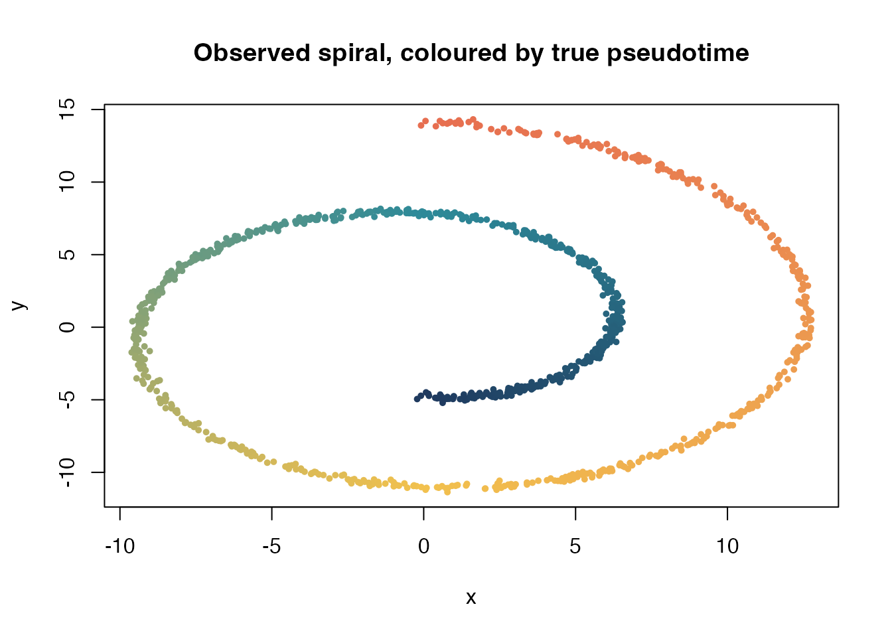
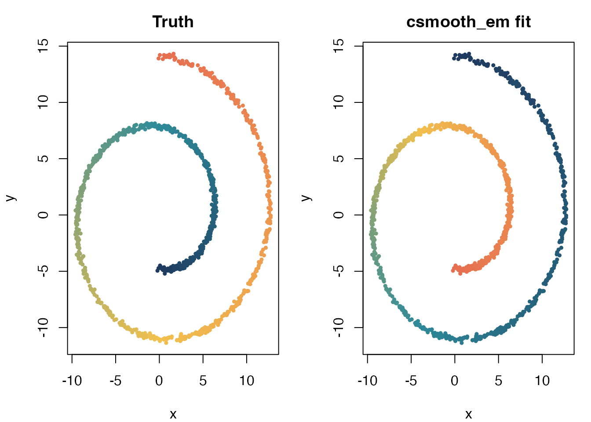

Getting Started with Legacy csmooth_em
csmooth_em_intro.RmdThis vignette documents the legacy csmooth_em pipeline.
It remains useful for internal testing and benchmark comparison, but for
new analyses the recommended starting point is the default
cavi vignette in mpcurve_intro.Rmd.
1 Statistical model
The underlying observation model is the same single-ordering MPCurve
model used by cavi:
with feature-specific trajectories and a smoothness prior
The key difference is computational:
-
csmooth_emtreats the trajectories through MAP updates rather than keeping a full Gaussian posterior , - the E-step uses responsibilities
- and the adaptive-ML path tracks a collapsed objective
2 Algorithmic view
At a high level, csmooth_em alternates:
- an E-step updating the responsibility matrix ;
- a penalized M-step updating the MAP trajectory means, mixture weights, and variances;
- when
adaptive = "ml", an additional hyperparameter step for and based on the collapsed objective .
For this adaptive-ML path, the most relevant optimization trace is
ml_trace, not the plain ELBO.
3 Simulated spiral example
To keep the comparison clean, we use the same easier spiral regime as
in the cavi introductory vignette:
-
n = 1000, -
t in [1.5*pi, 4.5*pi], -
sigma = 0.12, -
K = 60.
sim <- simulate_swiss_roll_1d_2d(
n = 1000,
t_range = c(1.5 * pi, 4.5 * pi),
sigma = 0.12,
seed = 1
)
X <- as.matrix(sim$obs)
t_true <- sim$t
pal <- grDevices::colorRampPalette(
c("#1F3A5F", "#2E8A99", "#F2C14E", "#E76F51")
)(256)
col_true <- pal[cut(t_true, breaks = 256, labels = FALSE)]
plot(X, col = col_true, pch = 19, cex = 0.55,
xlab = "x", ylab = "y",
main = "Observed spiral, coloured by true pseudotime")
Observed spiral used for the legacy csmooth_em introduction.
4 Fit the legacy backend
raw_fit <- initialize_csmoothEM(
X,
method = "fiedler",
K = 60,
adaptive = "ml",
num_iter = 0
)
raw_fit <- do_csmoothEM(raw_fit, iter = 60)
fit <- as_mpcurve(raw_fit)
stopifnot(inherits(fit, "mpcurve"))
stopifnot(identical(fit$algorithm, "csmooth_em"))
fit
#> MPCurve model fit
#> Algorithm : csmooth_em
#> Model : homoskedastic
#> n / d / K : 1000 / 2 / 60
#> Iterations: 60
#> ELBO (last) : -4677.812356
#> ML (last) : -4845.717463
#> logLik (last): -4677.809756
summary(fit)
#> MPCurve Model Summary
#> Algorithm : csmooth_em | Model : homoskedastic | n=1000 d=2 K=60
#> Underlying fit summary
#> <summary.csmooth_em>
#> n=1000, d=2, K=60, iter=60
#> modelName=homoskedastic, relative_lambda=TRUE
#> init_method=fiedler, adaptive=ml
#> sigma_update (ml path)=ml
#> pi range: [2.25e-05, 0.0348]
#> sigma2 (vector(d)) range: [0.116, 0.196]
#> lambda range: [0.129, 0.297], mean=0.213
#> ELBO last: -4677.812356
#> penLogLik last: -4677.809756
#> ML/C last: -4845.717463
#> log|H| last: 556.355463
#> relative change (last step):
#> ELBO: 1.27e-06
#> penLogLik: 1.2e-06
#> ML/C: 3.62e-06
#> lambda_vec (L2 rel): 0.0002355 Objective tracking
Under adaptive = "ml", the legacy routine is designed
around the collapsed objective ml_trace.
ml_trace <- fit$fit$ml_trace
elbo_trace <- fit$elbo_trace
stopifnot(length(ml_trace) > 1L)
stopifnot(all(diff(ml_trace) >= -1e-8))
cat("Collapsed ML trace monotone:", TRUE, "\n")
#> Collapsed ML trace monotone: TRUE
cat("Collapsed ML range:", round(range(ml_trace), 3), "\n")
#> Collapsed ML range: -5613.234 -4845.717
cat("ELBO monotone in this run:", all(diff(elbo_trace) >= -1e-8), "\n")
#> ELBO monotone in this run: TRUE6 Ordering recovery
pseudotime_hat <- as.numeric(fit$gamma %*% seq_len(ncol(fit$gamma)))
rho_t <- abs(cor(pseudotime_hat, t_true, method = "spearman"))
cat("Absolute Spearman correlation with true t:", round(rho_t, 4), "\n")
#> Absolute Spearman correlation with true t: 0.9998
col_fit <- pal[cut(pseudotime_hat, breaks = 256, labels = FALSE)]
op <- par(mfrow = c(1, 2), mar = c(4, 4, 2.5, 1))
plot(X, col = col_true, pch = 19, cex = 0.5,
xlab = "x", ylab = "y", main = "Truth")
plot(X, col = col_fit, pch = 19, cex = 0.5,
xlab = "x", ylab = "y", main = "csmooth_em fit")
True pseudotime (left) and legacy csmooth_em pseudotime (right).
par(op)
plot(fit, plot_type = "elbo")Legacy trace plot. The primary optimization trace here is ml_trace.
plot(fit, plot_type = "mu")Estimated mean trajectories from the legacy fit.